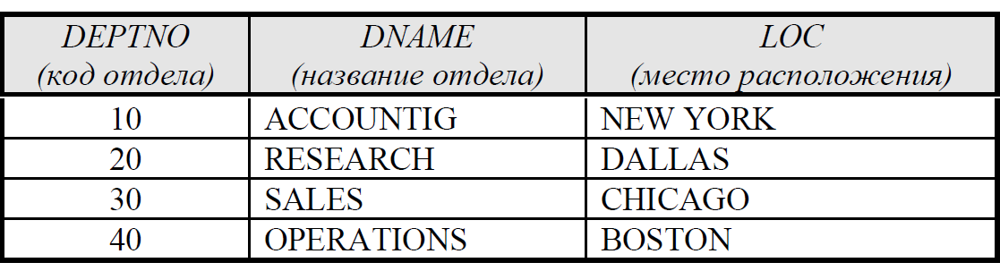

Завдання: Для таблиць практичного завдання 2
зробити оформлення з допомогою CSS:
1. Таблиця співробітників:
2. Таблиця відділов:
Інші сторінки практичного завдання мають мати
посилання на окремий файл каскадних таблиць.
Таблиця співробітників має бути розміщена на сторінці з
допомогою прийомів блокової верстки, де є заголовок сайту,
основний вміст, підвал сайту.